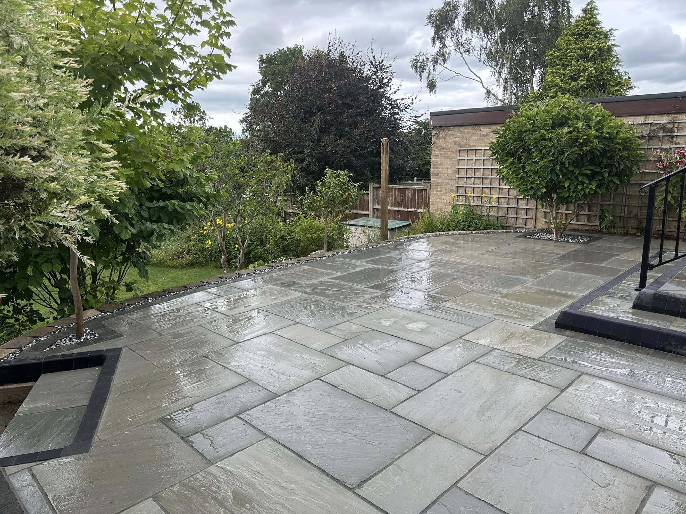
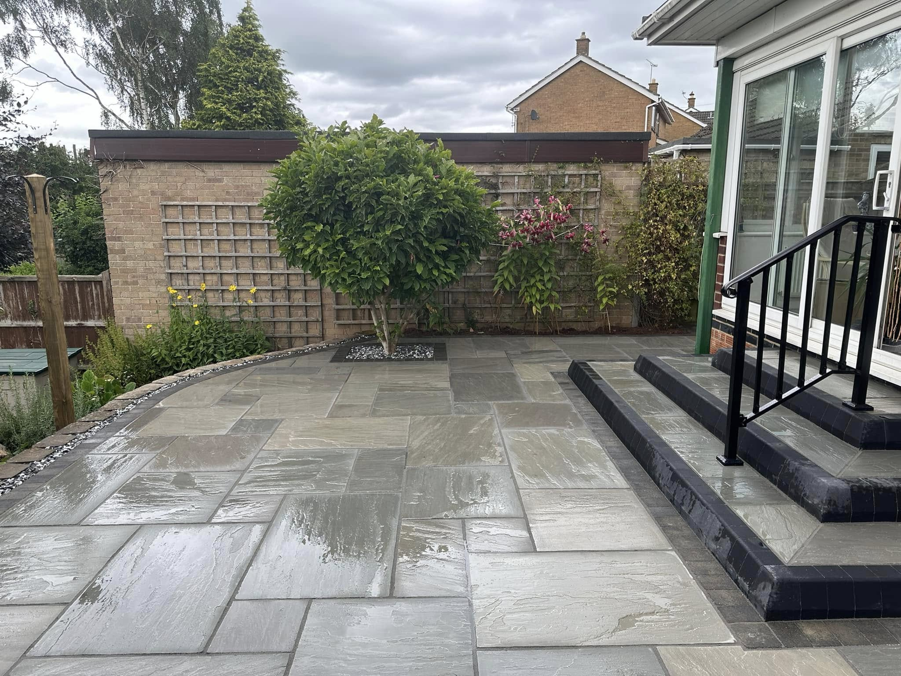
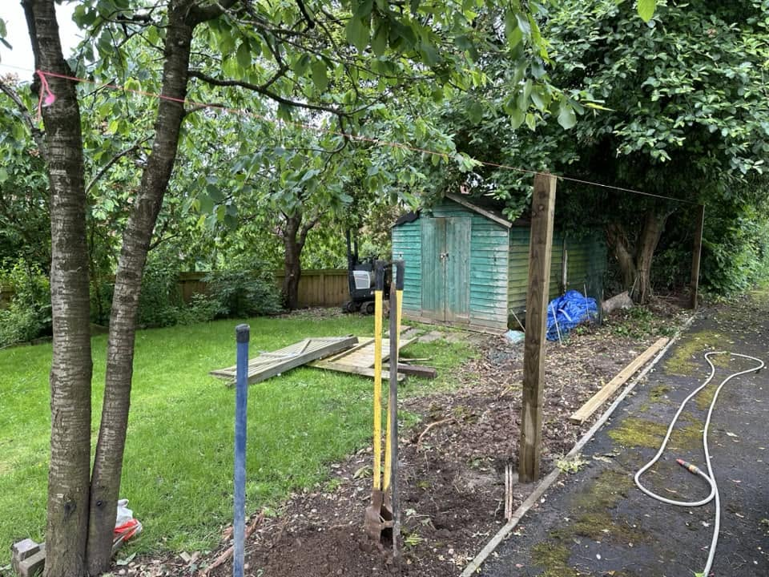
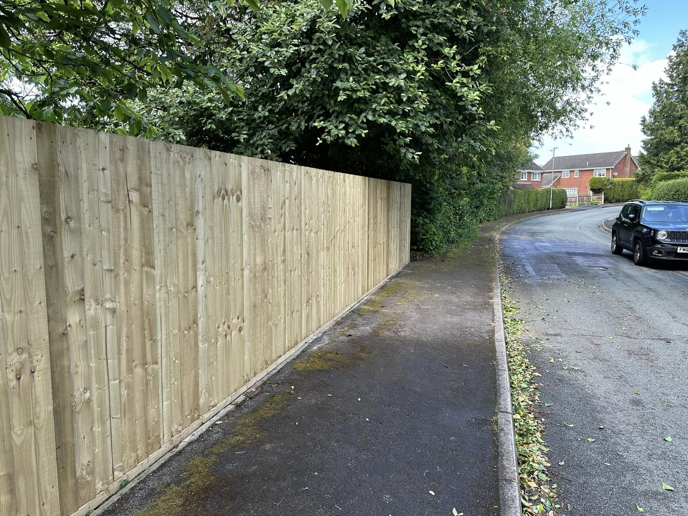
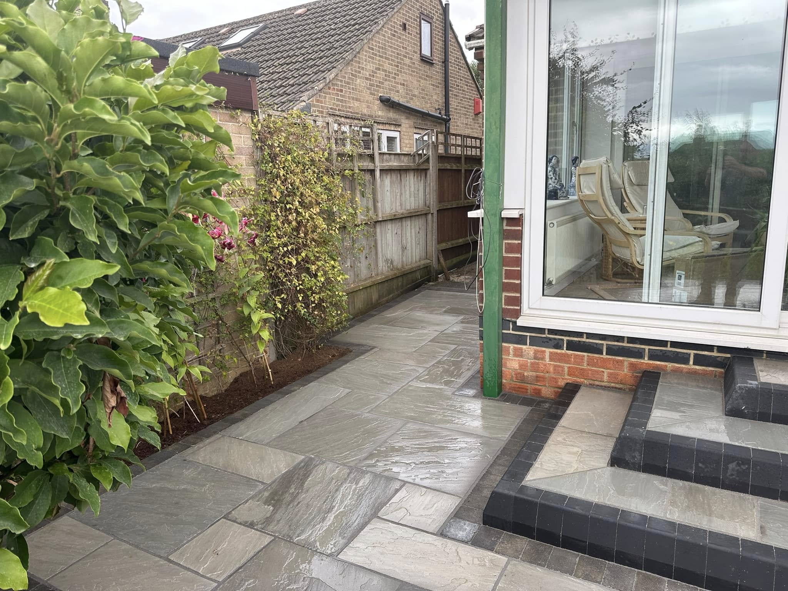
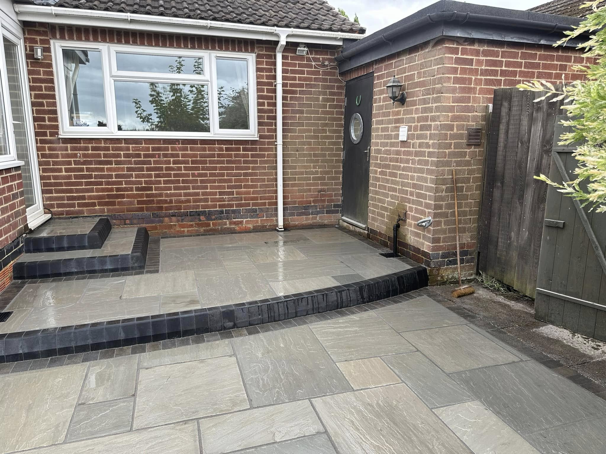

Porcelain & natural stone patios
Clean lines, thoughtful layouts and durable finishes for dining, relaxing and entertaining outdoors.
Bespoke landscaping across Derbyshire
Thoughtful garden transformations, precision-laid patios, fencing and groundworks—built around the way you want to use your home.
Designed with purpose
Green's Landscaping & Groundworks LTD delivers contemporary and traditional outdoor spaces throughout Derbyshire. From first excavation to final jointing, every detail is handled with care.
We combine practical groundwork with considered finishes, creating gardens that look exceptional and stand up to everyday life.
Explore recent projects ↗What we create
Clean lines, thoughtful layouts and durable finishes for dining, relaxing and entertaining outdoors.
One coordinated build covering excavation, levels, drainage, planting areas and the final finish.
Strong, neat fencing installations designed for privacy, security and a crisp finish from every angle.
Proper foundations, drainage and site preparation—the unseen work that makes every finished garden last.
Featured garden
Large-format stone creates a seamless route around the home, while dark edging and crisp steps give the project definition. Mature trees and planting remain the focus, so the finished space feels established rather than newly built.


Built properly
Good landscaping starts beneath the surface. We prepare, measure and build each layer carefully, so the finished result is straight, stable and made to last.


Selected work


A simple process
We meet at your property, discuss the space and understand what you want to achieve.
We agree the layout, materials, practical requirements and a clear quotation.
Ground preparation and construction are completed carefully, tidily and in the right order.
Your finished garden is ready to use, with every edge, level and detail checked.
“Bespoke contemporary and traditional landscape gardening in the Derbyshire area.”
Your garden starts here
Share a few details about your garden and the work you're considering. Green's Landscaping will get back to you to arrange a visit and discuss the next steps.